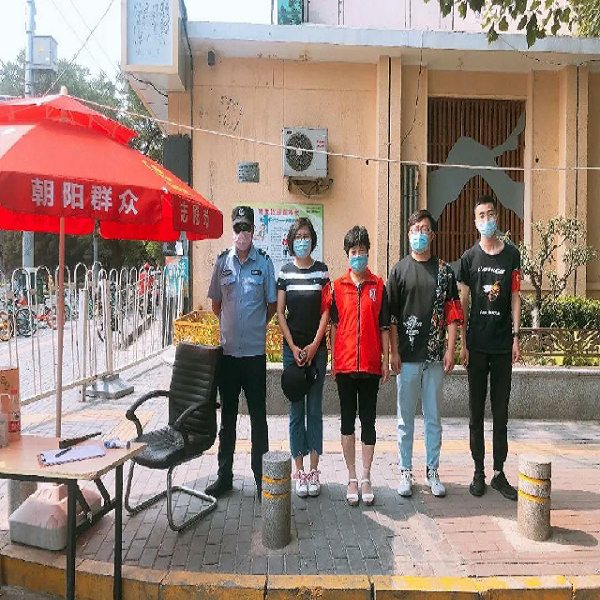

200个电话，耐心解答居民问题始终在线
“您好，中纺里社区,请问您有什么事?”社区工作者张觑坐在办公桌旁不到2分钟，已经陆续接到了3个电话。一整天下来,大概有200个电话，往往还没挂断座机电话，手机又响了。他还承担着联络转接境外返京人员等工作,境外返京人员到达时间大多在凌晨1点左右，等到转接、送往各目的地等一系列工作全部完成，已经凌晨三四点钟，只能回到家睡三四个小时后

24小时，1627名志愿者同时上岗
在朝阳区有这么一群"绿巨人”，当北京突发公共卫生事件响应级别由三级上调至二级后，他们快速响应，24个小时，为43个街乡152个社区配备了志愿者1627人，他们就是链家青年突击队。协助社区进行人员登记、测量体温、出入证核查、站岗消毒等工作，他们是社区的守门人和贴心人。想对这些守护着社区的“绿巨人”说声:谢谢你们!
“有'赵子龙'在那儿呢,必须行啊”
在朝阳区八里庄东里社区有一位“赵子龙”,本名赵永民，因为是个“热心肠”，大伙都乐意叫他“赵子龙”。疫情来袭,社区居委担心北巷1号楼的门岗缺人，居民们说:“没事儿，有赵子龙'在那儿呢,必须行啊!”最近气温渐渐升高，赵永民依然坚持每天早晚执勤,他说自己虽然不是党员，也不是楼门长,但他认为自己是这个社区的一分子，多干一点也是应该